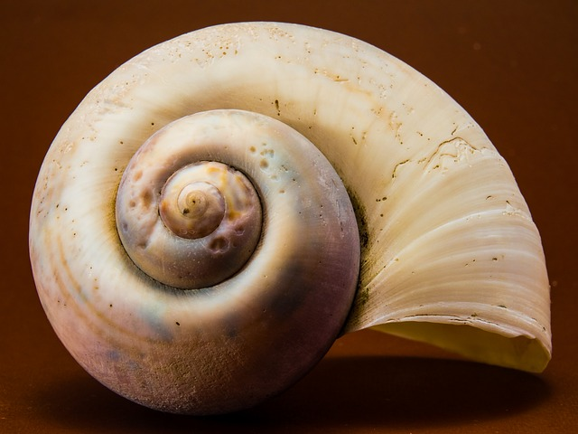
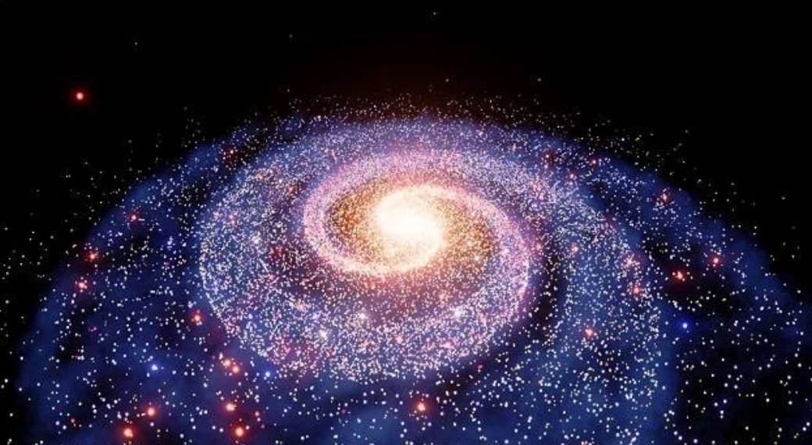
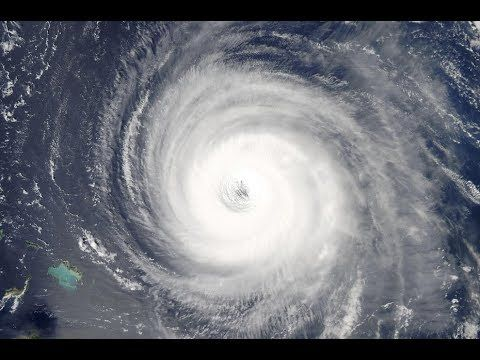

Творческая работа
Математика в природе
Работу выполнил:
ученик 6б класса
Еганов Грант
Золотое сечение
Золотое сечение встречается во многих объектах в природе и я хочу рассказать о некоторых из них.
1.Раковины улиток

Раковины улиток созданы по соотношению золотого сечения в виде золотой спирали. Форма раковины всегда остается неизменной, меняется лишь её размер.
2.Галактики

Спиральные галактики также созданы по соотношению золотого сечения, также в виде золотой спирали
3.Ураган

Облака в урагане также создают много золотых спиралей
Вывод:
Золотое сечение и вся математика в целом очень тесно связана с природой.